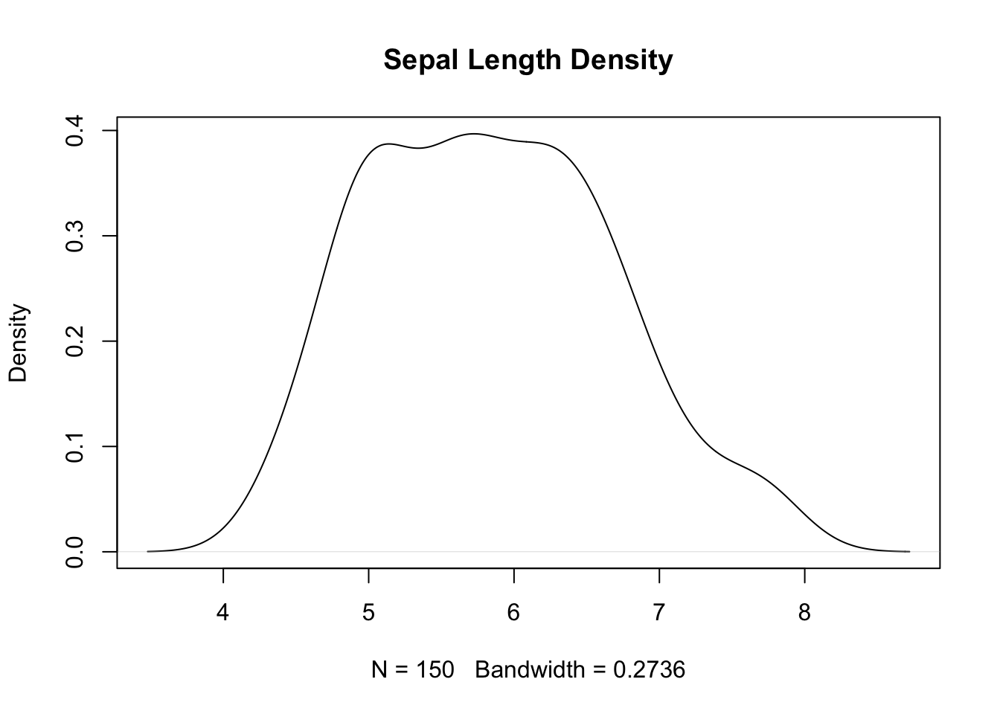

y <- density(iris$Sepal.Length)ST558 HW1: Data Science
Document Details
Collaborators: N/A
Assignment: HW1
Date: 20MAY24
Purpose
General practice in working with .qmd files.
Prompts
Prompt 1
What do you think being a data scientist is about? To collect, organize, analyze and visualize of large amounts of data to make informed business decisions
Prompt 2
What differences/similarities do you see between data scientists and statisticians?
Similarities
Both work with large amounts of data.
Both roles require a strong foundation in mathematics and probability theory and use statistical methods to analyze data
They often use programming languages (such as R or Python) for data manipulation and analysis.
Differences
Data Scientist often deal with messy, unstructured data and spend a significant amount of time cleaning and preprocessing data. On the other hand, Statisticians typically work with cleaner, well-organized data and may not need as much data cleaning
Data Scientist work on predictive modelling whereas statisticians work on inference and experimental design
Prompt 3
How do you view yourself in relation to these two areas? I currently lean more toward the role of a statistician, but I aspire to be versatile enough to handle both data science and statistical tasks when needed. ## Running Code
Iris Data
y Object Assignment
Assigning the given code to object y:
Determining the class of y using class() .
class(y)[1] "density"Determining the object type of y using typeof() .
typeof(y)[1] "list"Determining the structure of y using str() .
str(y)List of 7
$ x : num [1:512] 3.48 3.49 3.5 3.51 3.52 ...
$ y : num [1:512] 0.000232 0.000262 0.000296 0.000333 0.000373 ...
$ bw : num 0.274
$ n : int 150
$ call : language density.default(x = iris$Sepal.Length)
$ data.name: chr "iris$Sepal.Length"
$ has.na : logi FALSE
- attr(*, "class")= chr "density"Plot of y
Plotting the object y with function plot() . Using the echo: false option to ensure only output is displayed when rendered.
